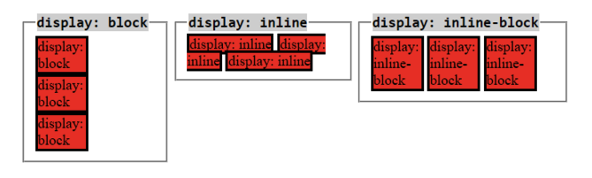
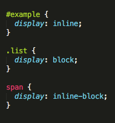

Dev Bootcamp Phase 0
Week 3
December 14, 2015
CSS lesson time! Have you ever wondered what it means to display inline vs using inline block?
Well your wait is over!
Inline elements: Elements that are able to sit next to each other in a line (although they will respect left/right margins and paddings).
Block elements: Elements that do everything inline elements do except are stacked on top of each other.
Inline-block elements: Elements that are able to sit next to each other in a line, BUT also avoid each other with respect to top/bottom margins and paddings as well.
Below is a good visualization of the differences (with a link to a page with more info!): 
To add this styling to your site, just simply jump into your css stylesheet and add the code display: inline; OR display: block; OR display: inline-block; to the selector of the items you want these display styles to affect!
